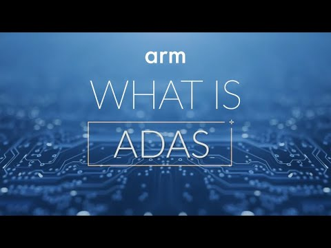
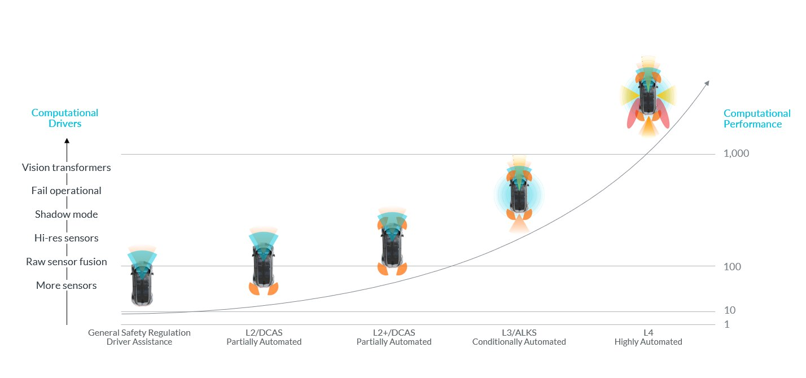

運転支援機能は、ますますドライバーの感覚の拡張になりつつある。カメラ、レーダー、その他のセンサーを使って潜在的な危険を検出し、ドライバーに警告し、是正動作を取り、さらにドライバーの責任のもとで車両を継続的に制御することもある。Advanced Driver Assistance Systems（ADAS）として知られるこれらの革新的な車載技術は、ドライバー体験だけでなく、すべての道路利用者の安全性も高められる。

レベル2のDCAS（Driver Control Assistance Systems）やレベル3のALKS（Automated Lane Keeping Systems）のような自動運転機能ほどメディアの注目を集めないとしても、運転支援とアクティブセーフティ機能は、将来のあらゆる車両で重要な役割を担う。前方衝突防止、レーンキープアシスト、歩行者対応の自動緊急ブレーキなど、さまざまな機能を組み合わせることで、ADASは道路上の死亡事故を大幅に減らす助けとなる。
たとえば米国だけでも、これらの技術には年間約21,000人の死亡を防ぐ可能性があると推定されている。欧州委員会や米国のNHTSA（National Highway Traffic Safety Administration）などの規制当局や交通安全機関が、近年、特定のアクティブセーフティ技術の展開を加速する措置を取ってきたのは偶然ではない。
それに加えて、消費者の利便性と安全性に対する嗜好の変化により、車両に搭載される最先端技術への需要も高まっている。これらの運転支援機能がSoftware-Defined Vehicle（SDV）全体でより普及するなか、車両メーカー（OEM）は、ADASアクティブセーフティ機能を広く車両に展開することへの圧力に直面している。
ArmがSoftware-Defined Vehicle革命をどう主導しているかについては、こちらのリンクを参照してほしい。
しかし現実には、特定のアクティブセーフティ機能の世界的な展開率はまだ比較的低い。これは主に、以下の技術的・経済的課題の影響を受けている。
Armは、変革的な車載技術と業界をリードするソフトウェアエコシステムを通じて、ADASとAutomated Driving Systems（ADS）向けに、スケーラブルで効率的かつ革新的なソリューションを提供する最前線にいる。2024年3月、Armとそのエコシステムは、最新のArm Automotive Enhanced（AE）プロセッサと新しい仮想プラットフォームを発表した。これらは、ADASソリューションを効率的かつ短い市場投入期間で提供し、性能、安全性、セキュリティの向上を可能にするうえで重要である。
ArmのAutomotive Enhanced（AE）プロセッサがADASをどう変革し、車載技術の未来を推進しているかを確認してほしい。
Armの基盤IPで構成されるAEスイートは、長年にわたり車載エレクトロニクスの礎になってきた。比類ない性能スケーラビリティ、電力効率、そしてASIL B(D)およびASIL DのISO 26262認証への道筋を簡素化する独自の機能安全能力を提供する。
AEポートフォリオに追加された最新製品は以下の通り。
この広範なAE IPポートフォリオは、再利用性を最大化し、エントリーレベルのADAS機能からプレミアムなSAE Level 3運転、さらに自動運転車までシームレスにスケールする、ソフトウェア・ハードウェアプラットフォームを構築するための理想的な基盤を提供する。
これらの製品は合わせて、半導体ベンダー、車両メーカー、自動車サプライチェーン全体のその他パートナーに、包括的なコンピューティング基盤を提供する。Arm AE IPポートフォリオの製品は、Marvell、MediaTek、NVIDIA、NXP、Renesas、Telechips、Texas Instrumentsなどによってすでに採用されている。

今後を見据えると、システムはさらに複雑になり、安全性の必要性もさらに高まる。2025年に提供予定のArm Compute Subsystems（CSS）for Automotiveは、最先端ファウンドリプロセスを用い、性能、電力、面積に最適化されたArm AE IPの事前統合・検証済み構成を提供する。これにより、さまざまなコンポーネントをパートナー向けにまとめ上げ、コンピュート性能と効率を改善し、市場投入までの時間をさらに短縮する。
Armの新しいAE CPUであるNeoverse V3AE、Cortex-A720AE、Cortex-A520AEは、ADASとADアプリケーションの全領域をカバーできる。これらのプロセッサは、フロントガラス搭載の前方認識から、ドライバーレス車両向けの完全冗長AVコンピュータまで、幅広いアプリケーションに最適な性能とエネルギー効率を提供する。
さらに、64ビットCPUであるArm Cortex-R82AEは、リアルタイムアルゴリズムとASIL D安全監視に前例のない性能を提供する。新しいMali-C720AE ISPはこのラインアップを完成させ、運転、駐車、キャビン内シナリオで使われる高解像度カメラからの画像を安全に前処理するため、最大1.5Gpix/sのスループットと低レイテンシを提供する。
機能安全とサイバーセキュリティにおけるArmの実績を基盤に、新しいAE IPスイートは、ASIL B要件への準拠を簡素化し、セキュリティ脅威を軽減する機能を導入している。たとえば、新しいTransient Fault Protection（TFP）は、システム信頼性を高め、ハードウェア診断カバレッジを拡張する助けになる。
ArmはSOAFEEや自動車業界全体のその他の取り組みを通じて、最新のオープン標準に基づく成熟した大規模な車載エコシステムを実現している。SOAFEEはすでに、2025年のArm CSS for Automotiveを可能にする新しいソフトウェアソリューションのエコシステムを生み出しており、シリコン開発とデプロイプロセスを支えるソフトウェア一貫性を提供する。
Geely、GM、Tata Motorsを含む120社の主要自動車企業がSOAFEEで自動車産業をどう変革しているかについては、SOAFEEを参照してほしい。
ADAS機能の開発、検証、妥当性確認という複雑で高価かつ時間のかかる作業に対処するため、ArmはAWS、Siemens、Corelliumなどのパートナーと協業し、Armベースのサーバー上でArmコードを実行することで高速化される新しい種類の仮想プラットフォームを提供している。最新AE IP向けにこうした開発環境が利用可能になることで、物理シリコンが完成する前にソフトウェアを開発・テストでき、開発期間を短縮し、市場投入を早められる。
その好例がLeddarTechである。同社は次世代Arm AE IP、特にArmv9ベースのCortex-A720AE CPUに向けて、ADASの認識・フュージョンアルゴリズムを最適化した。プリシリコンプラットフォームとArmv9のソフトウェア準備性を使い、SVE2（Scalable Vector Extension 2）のような新機能を活用することで、前世代のCortex-A78AE CPUと比較して30%以上の性能向上を達成した。
ADASは、車両安全性を高め、数百万件の事故を防ぎ、数え切れない命を救う可能性を持つ重要な技術である。ADASの広範な採用は、より安全で効率的な交通の未来に向けた一歩である。
Armは、自動車産業で起きている大きな変革に対応するうえで最も適した技術スイートを提供している。長期的な視点とパートナーとの継続的な協業により、車載コンピューティングと安全の未来はArm上に構築されつつある。